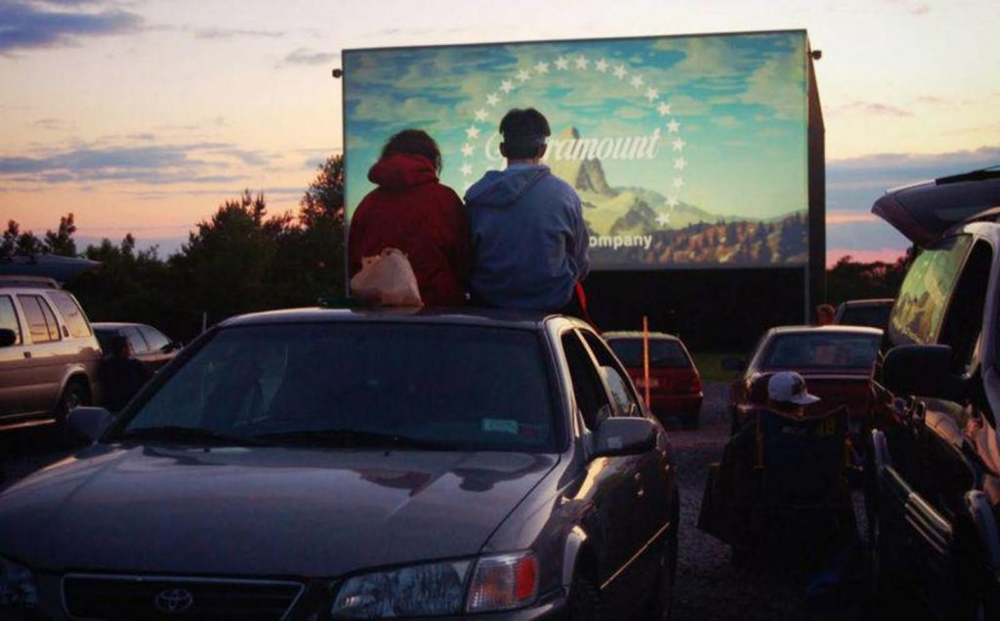
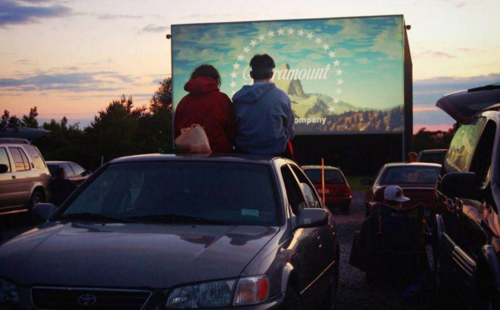

CINE DE TERROR ESTE 31 DE OCTUBRE

 

Imagina un cine de carros de terror donde los autos están dispuestos en un estacionamiento oscuro y decorado con telarañas. Al llegar, recibes un mapa y te dan la bienvenida con una voz misteriosa. La película comienza y, mientras la historia avanza, actores aparecen entre los autos, interpretando escenas clave.
Los efectos de sonido y luces parpadeantes crean una atmósfera inquietante. En un momento culminante, un "monstruo" salta entre los autos, haciendo que todos se sobresalten. Al final, un espectáculo de fuegos artificiales simula explosiones, dejando a la audiencia emocionada y comentando sus momentos favoritos. ¡Una experiencia aterradora y divertida!
CARTELERA


Camino de las Viñas, km 2.5, Aldeanueva de Ebro, La Rioja, España